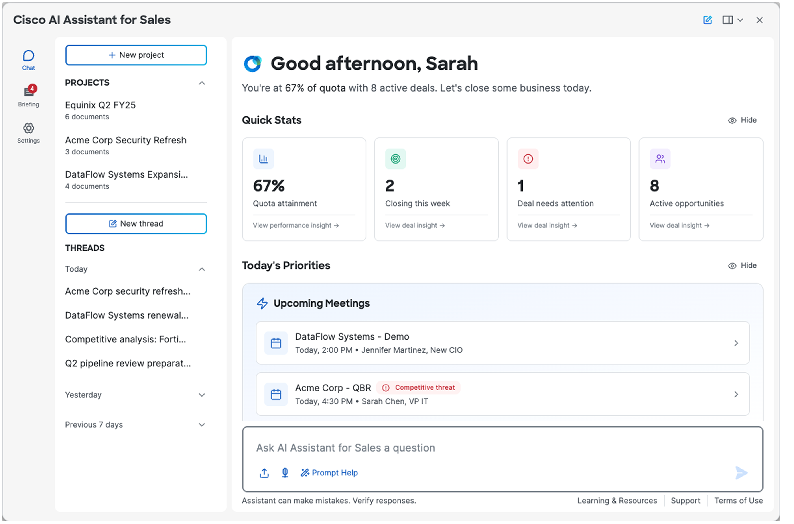
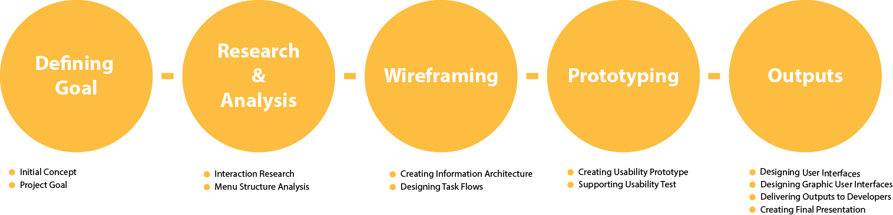

Sales AI Assiatant Proposal Cisco | 2024 - 2025  Framing the Problem Q. What percentage of your working time do you spend looking for information? A. At Cisco, sellers spend nearly 20% of their time looking for accurate, holistic information about customers and solutions across 30+ internal tools. How Might We unify fragmented customer data to enable more efficient & effective customer engagement for Cisco sellers? Collaborators Business team Dev team Contents Designer UX Researchers UX designers (leading project, conducting ux workshop, getting insights, suggesting vision, creating prototype) Direction Business Vision: AI chat interface embedded across 30+ tools Agentic Orchestration: User, customer, solution & enablement agents -> provide access to disparate data via chat Tasks: Generative Research, Art of Possible Workshop to understand stakeholder vision Deliver MVP experience Explore additional use cases Design for future-state scalability Collaborators Business team Dev team Contents Designer UX Researchers UX designers (leading project, conducting ux workshop, getting insights, suggesting vision, creating prototype) Directions  Outputs User Interface Design: All screens of Trio 8300 using Sketch Graphic User Interface Design: Library asset,icons,components using Adobe Photoshop, Illustrater Prototype: Working prototype using Sketch Presentation: Concept delivery file, Final product introduction file Example file: Sketch Prototype Image